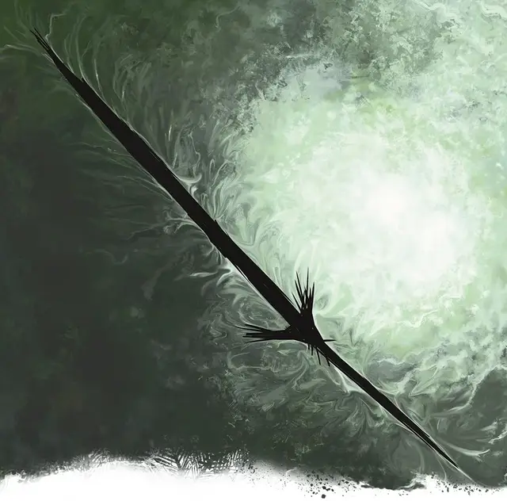

Оживлённый клинок разрушения
Living Blade of Disaster
Маленький Конструкт, без мировоззрения

Класс Доспеха 14 (природный доспех)
Хиты 67 (9к6 + 36)
Скорость 0 футов, летая 30 футов (парит)
| мод | спас | ||
|---|---|---|---|
| СИЛ | 10 | +0 | +0 |
| ЛОВ | 16 | +3 | +3 |
| ТЕЛ | 19 | +4 | +4 |
| мод | спас | ||
|---|---|---|---|
| ИНТ | 6 | −2 | −2 |
| МДР | 10 | +0 | +0 |
| ХАР | 3 | −4 | −4 |
Иммунитет к урону яд; дробящий, колющий, рубящий от немагических атак
Иммунитет к состояниям бессознательность, глухота, захват, истощение, окаменение, опутанность, ослепление, отравление, паралич
Чувства тёмное зрение 60 футов, пассивное Восприятие 10
Опасность 8 (3900 опыта)
Бонус мастерства +3
Особенности
Сопротивление магии. Живое заклинание совершает с преимуществом спасброски от заклинаний и прочих магических эффектов.
Неудержимый. Живое заклинание может пройти сквозь любой барьер, даже стену магической силы.
Необычная природа. Живое заклинание не нуждается в воздухе, еде, питье и сне.
Действия
Силовой клинок. Рукопашная атака заклинанием: +6 к попаданию, досягаемость 5 фт., одна цель. Попадание: 26 (4к12) урона силовым полем, если только живое заклинание не выбросило «18» или выше на к20 при броске атаки, в этом случае атака считается критической и наносит вместо этого 78 (12к12) урона силовым полем.
Реакции
Упреждающий удар. Живое заклинание совершает рукопашную атаку против существа, начинающего свой ход в пределах 5 футов от живого заклинания.
Описание
Области дикой магии и места, разрушенные могущественными сверхъестественными силами иногда приводят к тому, что эффекты заклинаний становятся живыми сущностями. Эти так называемые «живые заклинания» населяют места, где они когда-то были созданы, подпитываясь наполняющей эти места магической энергией.
Живой клинок разрушения — это заклинание клинок разрушения [blade of Disaster], обладающее злой волей. Клинок выглядит как парящий чёрный планарный разлом в форме меча. Клинок жаждет разрушения, как демон.